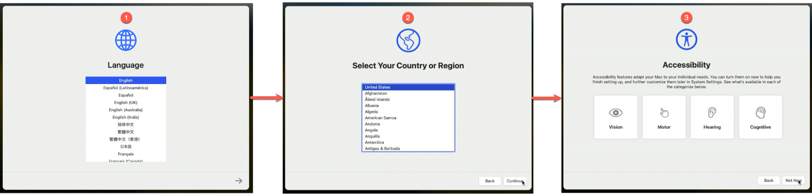
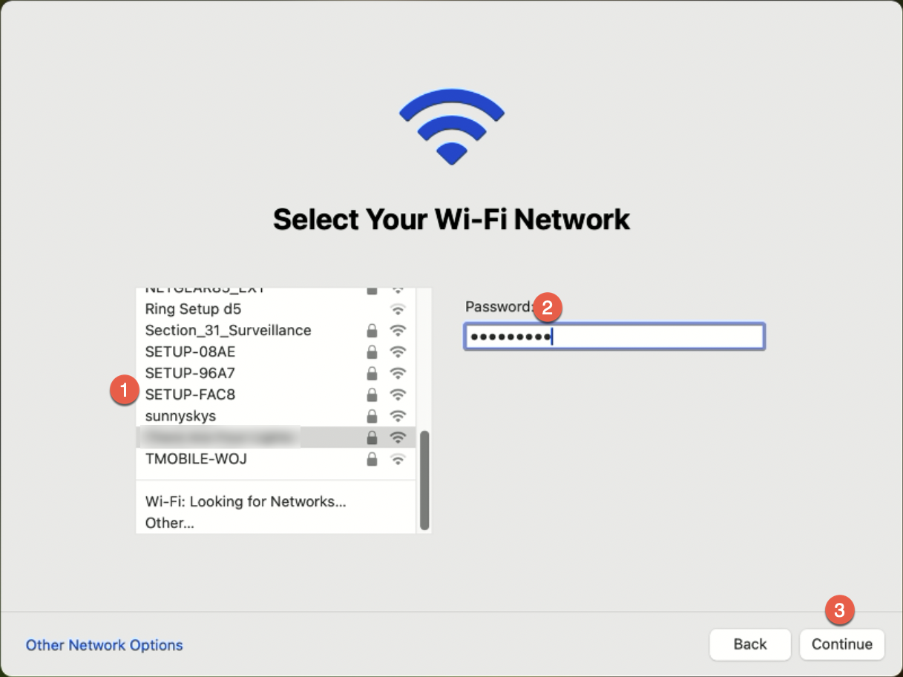
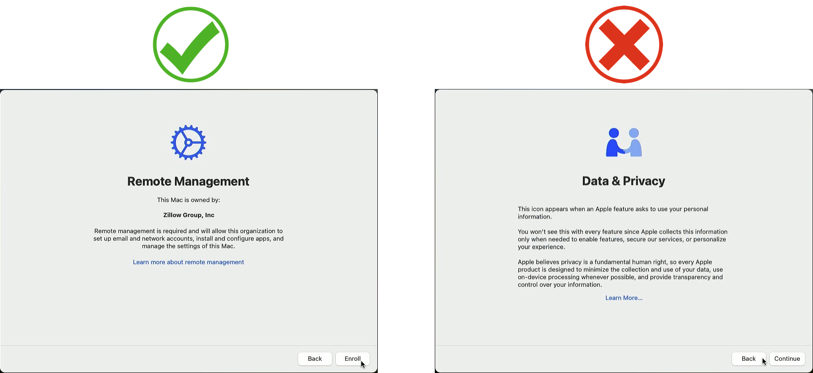
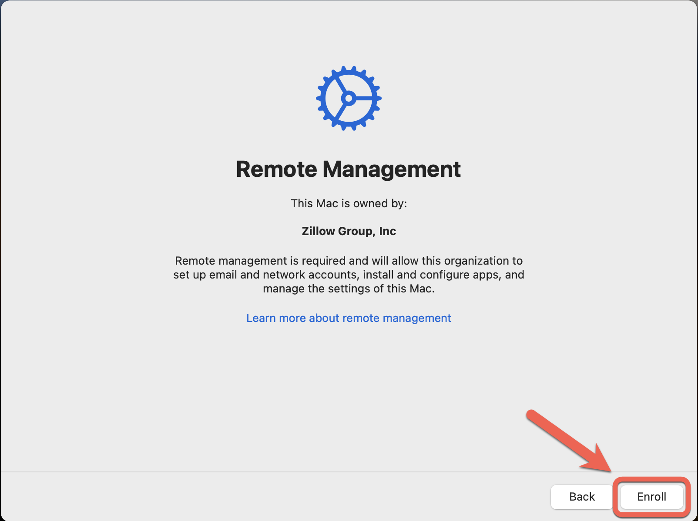
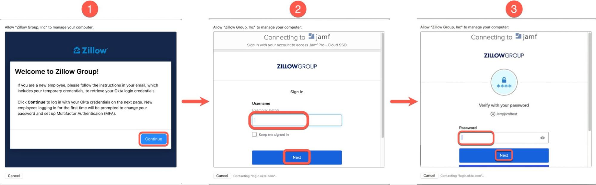
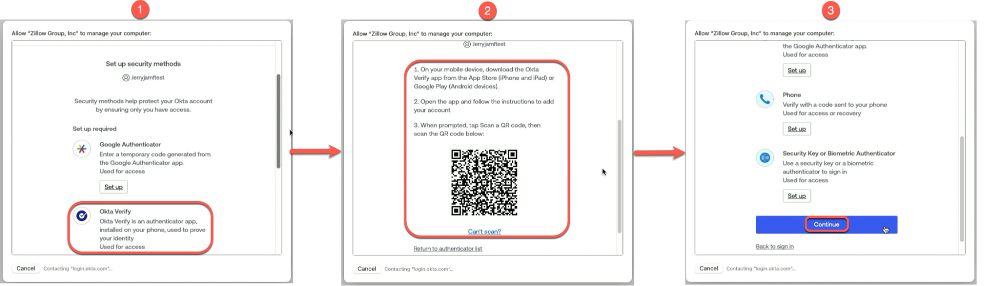
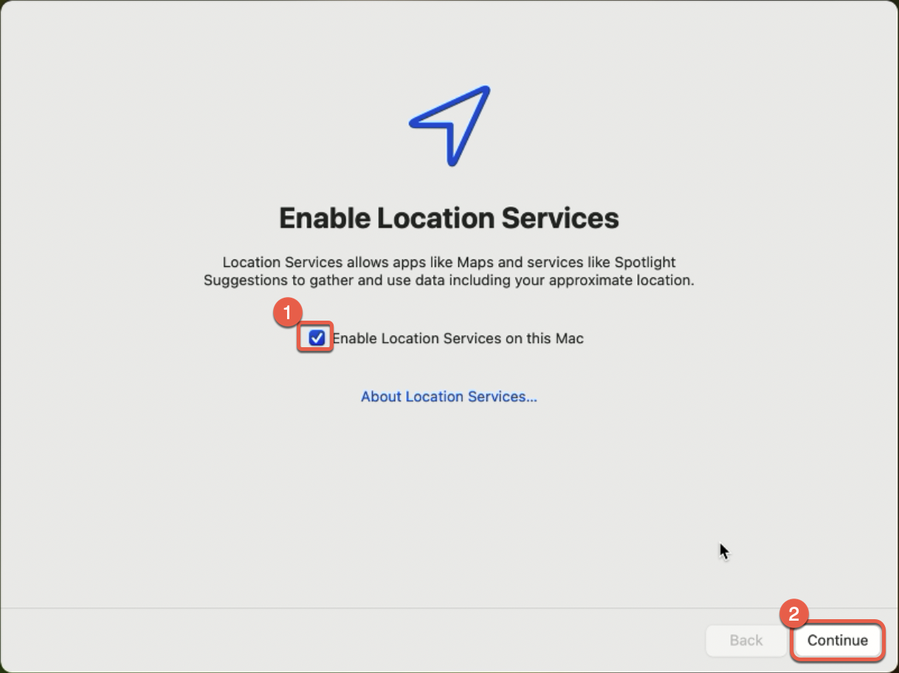

New Mac Setup
- When you power on your Mac, you will be greeted by Setup Assistant
- Choose your Language, Country/Region, and Accessibility options

- Next, connect to your WiFi network. This is required to properly set up your Mac.

- Important: The next screen you should see is the “Remote Management” screen. If you see the "Data & Privacy" screen, click the Back button until the screen goes black. Next, when Setup restarts, click Next until you see the "Remote Management" screen. If you still see the "Data & Privacy" screen, reboot your Mac.

- Click Enroll on the Remote Management screen.

- Follow the prompts to log in with your Okta credentials.

- If you have not set up Multifactor Authentication, you will be prompted to set up MFA. Follow the prompts provided. Okta Verify is the preferred method.

- Check the box to Enable Location Services, then click Continue.

- Enter your Okta Username and Password one last time to create your account and log in to your Mac.

- After you log in, all required applications and settings will be installed. This process can take 10-20 minutes, depending on your internet connection.

Congratulations!
Your device is now set up and ready to use
You can find additional applications by launching Software Center
If you need assistance or resources, you can visit the IT section of Zallway
For existing employees setting up a replacement device, here are resources for backing up and returning your old device:
Zallway - Set up a New Mac Device
Zillow Mac Migrator